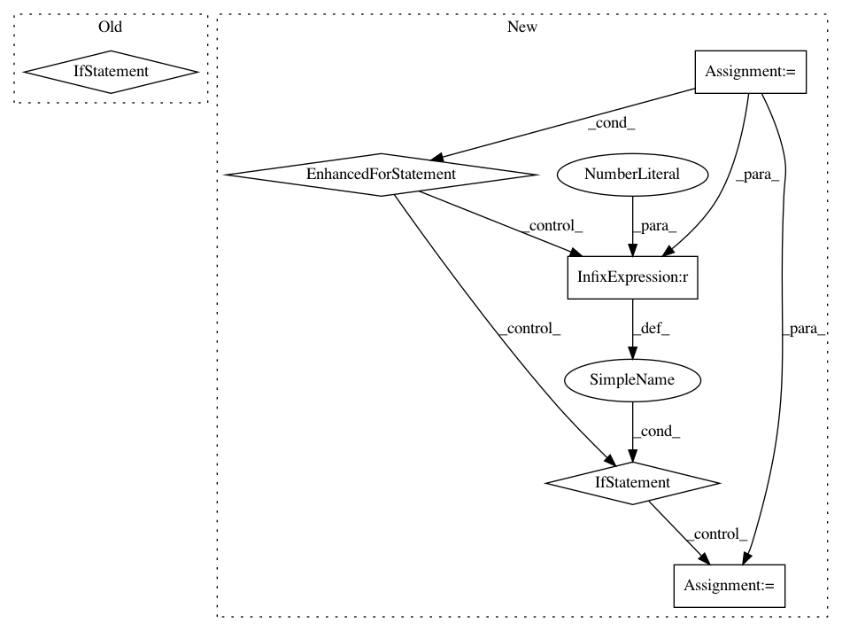

d55d201b303b4186670ada7c7ea462e0c481d6d6,keras_bert/bert.py,,get_model,#Any#Any#Any#Any#Any#Any#Any#Any#Any#Any#Any#Any#Any#Any#Any#Any#Any#,43
Before Change
for layer in model.layers:
layer.trainable = _trainable(layer)
output_layer_num = min(output_layer_num, transformer_num)
if output_layer_num > 1:
outputs = []
for i in range(output_layer_num):
layer = model.get_layer(name="Encoder-{}-FeedForward-Norm".format(transformer_num - i))
outputs.append(layer.output)
transformed = keras.layers.Concatenate(name="Encoder-Output")(list(reversed(outputs)))
return inputs, transformed
def get_custom_objects():
After Change
layer.trainable = _trainable(layer)
if isinstance(output_layer_num, int):
output_layer_num = min(output_layer_num, transformer_num)
output_layer_num = [-i for i in range(1, output_layer_num + 1)]
outputs = []
for layer_index in output_layer_num:
if layer_index < 0:
layer_index = transformer_num + layer_index
layer_index += 1
layer = model.get_layer(name="Encoder-{}-FeedForward-Norm".format(layer_index))
outputs.append(layer.output)
if len(outputs) > 1:
transformed = keras.layers.Concatenate(name="Encoder-Output")(list(reversed(outputs)))
else:
transformed = outputs[0]
In pattern: SUPERPATTERN
Frequency: 3
Non-data size: 6
Instances
Project Name: CyberZHG/keras-bert
Commit Name: d55d201b303b4186670ada7c7ea462e0c481d6d6
Time: 2019-07-05
Author: 853842+CyberZHG@users.noreply.github.com
File Name: keras_bert/bert.py
Class Name:
Method Name: get_model
Project Name: apple/coremltools
Commit Name: 523d5e03d86c26267ee6bdf17dd20f6ce6bdadd7
Time: 2020-10-10
Author: aseem.elec@gmail.com
File Name: coremltools/converters/mil/mil/ops/defs/tensor_operation.py
Class Name: concat
Method Name: value_inference
Project Name: apple/coremltools
Commit Name: 5b9ca1a2a58ebe169f91bc0ea3f30e1cc4c62bc0
Time: 2017-12-20
Author: shuoxin_lin@apple.com
File Name: coremltools/converters/keras/_topology2.py
Class Name: NetGraph
Method Name: make_output_layers